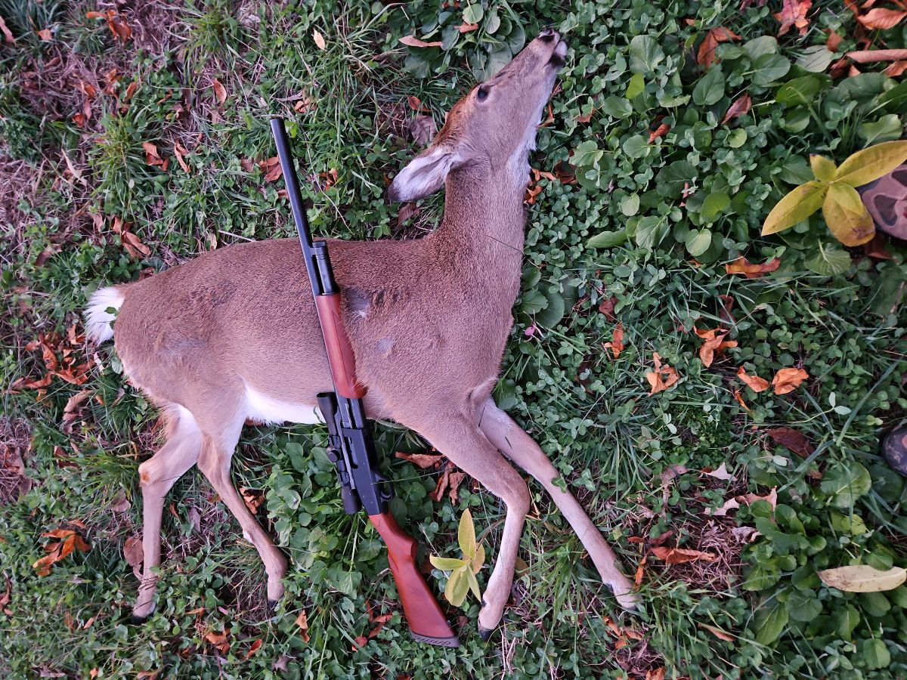

I have always considered myself lucky to have been raised in a household with parents that cook. Two households, actually. My parents separated at a young age. I grew up eating similar foods in both homes, but the preparations were different. As a teenager, I chose a restaurant as my first job. It was the first of many. Years went by and what seemed to be an interest born of necessity became both a hobby and a career. As an adult, I have returned to school in hopes of a new career bath but will always carry the passion for food I nurtured for over 20 years.

Hunting came later. I have enjoyed hiking, fishing, and shooting sports most of my life. On many occasions, fishing had brought home higher quality ingredients than what I could find (or afford) at the store. At the suggestion of several of my friends, I tried hunting for the first time in my early thirties. In time, I applied the skills and methods I had picked up in my culiinary education and from the various kitchens I have worked in to the game I brought home. Venison and squirrel in particular.
Vension, a red meat simliar to beef or lamb, has countless prepartation options. Pot roast was one of the meals I mentioned earlier that I loved growing up, whether it was prepared by my mother or my father. For my own home, I prefer to brine the roast in advance. This process is known as "corning". The meat is submerged for several days in a liquid with aromatics and a curing salt. The result is the same flavorful, rose-colored roast served as corned beef, but lower in fat and cholesterol.